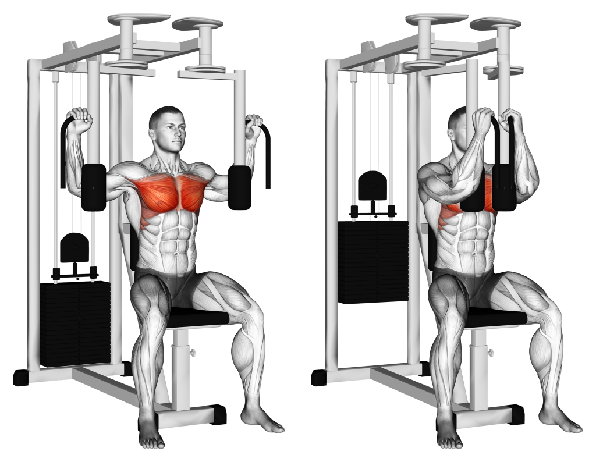

Pec Deck Machine
Go to bottom
The Pec Deck Machine, a popular fixture in the gym, is an excellent tool for targeting the chest muscles with pec flyes. When performed with proper technique, it offers a simple, efficient, and user-friendly way to work the chest. While free weight exercises are often favored, the pec deck machine, when executed correctly, can be just as effective in engaging the chest muscles and improving your overall chest development.

Benefits of the Peck Deck Machine
- Targets chest muscles: The pec deck machine focuses on the chest muscles for effective development and strengthening.
- Isolates chest muscles: It isolates the chest, allowing for targeted muscle engagement and improved mind-muscle connection.
- Controlled and safe movement: The machine provides a guided range of motion, reducing injury risk and ensuring proper form.
- Convenient and user-friendly: The pec deck machine is easy to use, offering a convenient option for chest workouts.
Muscles Targeted
- Pectoralis major: The primary muscle of the chest, responsible for chest development and power.
- Anterior deltoids: The front portion of the shoulder muscles, assisting in chest movements.
- Serratus anterior: Located on the sides of the chest, this muscle aids in stabilizing the shoulder blades.
Back to Home